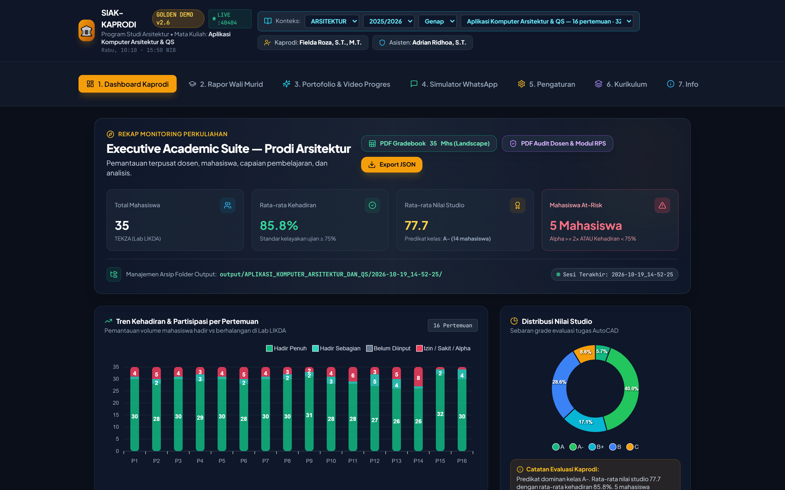
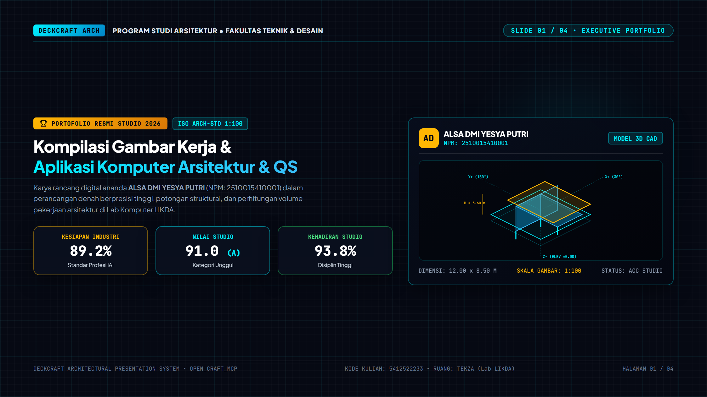
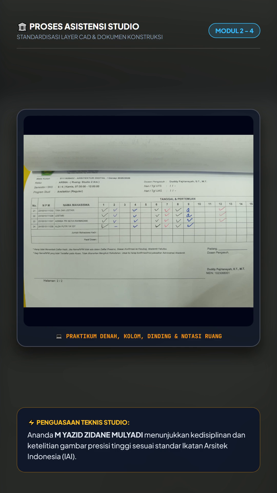

Platform yang mengubah presensi dan nilai menjadi rekap Kaprodi, rapor wali murid, portofolio tiap mahasiswa, dan paket dokumen siap tanda tangan — dihitung, bukan diketik ulang.
Presensi di Excel, nilai di PDF, catatan di WhatsApp. Setiap versi bisa berbeda, dan yang mana yang resmi tidak pernah jelas.
16 pertemuan, 35 mahasiswa, tiga mata kuliah. Satu salah klik menggulung seluruh perhitungan nilai akhir.
Orang tua baru menerima kabar setelah nilai dikunci. Tidak ada momen untuk mendampingi saat masih bisa dibantu.
Setiap mata kuliah punya penawaran, 16 sesi, dan nilai per slot. Satu tempat, satu kebenaran.
Σ bobot wajib 100, Alpha = 0, kehadiran per slot, deteksi At-Risk. Gagal validasi = berhenti, bukan menebak.
Rekap Kaprodi, rapor wali, portofolio, video 9:16, sampai paket PDF siap cetak.



Profil masuk: kehadiran, nilai dasar, gaya belajar. Radar 5 pilar pertama kali terbentuk.
Perbandingan semester 1 vs 2: naik/turun, konsisten, lonjak. Career matrix mulai menyemat.
Kekuatan terbukti → rekomendasi studio lanjutan, magang, sayembara. Portfolio kaya.
Indeks kesiapan profesi final, CV generator, rekomendasi dosen, alumni tracking.
Data tidak dihapus tiap semester. Tree kurikulum bertingkat menyimpan riwayat lengkap per mahasiswa.
Perubahan 5 pilar (CAD, Detail, Ruang, Disiplin, Waktu) dihitung tiap semester → visual naik/turun.
10 profesi tidak statis. Persentase bergeser mengikuti bukti kompetensi terbaru, bukan kesan awal.
At-Risk tidak hanya semester ini. Pola alpha berulang, kehadiran menurun 2 semester berturut → flag dini.
Rapor bukan "nilai semester ini" tapi "perjalanan 4 semester". Wali lihat anak tumbuh, bukan hanya angka.
Riwayat lengkap per mahasiswa = bukti capaian CPMK lintas semester. Siap audit BAN-PT / LAM Teknik.
Dashboard 7 tab, 11 PDF resmi, rapor wali, deck portofolio, dan video 9:16 — semua dari satu tree data.
Gateway pesan terjadwal: rekap mingguan ke Kaprodi, kabar progres ke wali, pengingat At-Risk — tanpa salin-tempel.
Satu instance per prodi, template kurikulum sendiri, SSO kampus, dan arsip siap audit akreditasi.
Pilot satu semester, satu prodi, tiga mata kuliah. Evaluasi pada empat indikator sebelum direplikasi ke prodi lain.